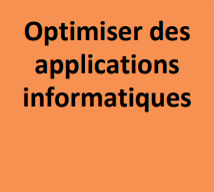

Optimiser des applications informatiques
Apprentissage critique du niveau 1 de la compétence 2
- Analyser un problème ave méthode (découpage en éléments algorithmiques simples, structure de données...)
- des algorithmes pour des problèmes classiques (tris simples, recherche...)
- Expérimenter la notion de compilation et les représentations bas niveau des données
- et mettre en œuvre des outils mathématiques pour l'informatique
Ressources
| Ressource | R1.01 Initiation au développement | R1.03 Introduction à l'architecture des ordinateurs | R1.04 Introduction aux systèmes d'exploitation et à leur fonctionnement | R1.06 Mathématiques discrètes | R1.07 Outils mathématiques fondamentaux |
|---|---|---|---|---|---|
| Coefficient | 24 | 3 | 3 | 15 | 15 |
S1.02 Comparaison d'approches algorithmiques
En partant d'un besoin exprimé par un client, il faut réaliser une implémentation, comparer plusieurs approches pour la résolution d'un problème et effectuer des mesures de performance simples. Cette SAÉ permet une première réflexion autour des stratégies algorithmiques pour résoudre un même problème.
R1.01
Initiation au développement
Implémenter des conceptions simples
Élaborer des conceptions simples
Faire des essais et évaluer leurs résultats en regard des spécifications
L'objectif de cette ressource est l'initiation au développement. Les savoirs de référence suivants devront être étudiés :
- Algorithmes fondamentaux (structures simples, recherche d'un élément, parcours, tri...)
- Algorithmes sur les structures de données (itératifs et/ou récursifs)
- Manipulation de listes, tableaux, collections dynamiques, statiques (accès direct ou séquentiels), piles, files, structures
- Types abstraits de données simples : première approche de l'encapsulation
- Notions de modularité
- Premières notions de qualité (ex : nommage, assertions, documentation, sûreté de fonctionnement, jeu d'essais, performance...)
- Lecture/écriture de fichiers
- Présentation de la gestion de versions
Cette ressource est à la base des apprentissages des compétences 1 et 2. En effet, la réalisation d'un développement d'application et l'optimisation des applications informatiques nécessitent l'apprentissage du développement.
R1.03
Introduction à l'architecture des ordinateurs
Aucun apprentissage critique...
L'objectif de cette resource est de découvrir la structure et les composants d'un ordinateur. Les savoirs de référence suivants devront être étudiés:
- Architecture générale d'un ordinateur, histoire et évolution de l'informatique
- Codage (codage des informations de base : nombres, caractères)
- Arithmétique des traitements associés
- Etude d'un ordinateur personnel (composants...)
- Evolution des technologies et des systèmes
Cette resource permettra de découvrir les différents composants matériels et logiciels interns qui constituent un ordinateur, de manière à appréhender le fonctionnement, mais aussi les limites de leur utilisation.
R1.04
Introduction aux systèmes d'exploitation et à leur fonctionnement
Aucun apprentissage critique...
L'objectif de cette resource est de comprendre le rôle, les composants et le fonctionnement d'un système 'exploitation. Les savors de référence suivants devront être étudiés:
- Caractéristiques et types de systèmes d'exploitations
- Langage de commande (commandes de base, introduction à la programmation des scripts)
- Gestion des processus (création, destruction, suivi, etc.)
- Gestion des fichiers (types, droits, etc.)
- Gestion des utilisateurs (caractéristiques, création, suppression, etc.)
- Principes de 'installation et de la configuration d'un système : notion de noyau, de pilotes, de fichiers de configuration, boot système...
Cette resource permettra de découvrir les principes d'un système d'exploitation, leur mode de fonctionnement et les différents types existants. Elle contribuera à comprendre comment installer un système sur une machine et à le personnaliser en développant des fonctions simples facilitant la configuration et le paramétrage.
R1.06
Mathématiques discrètes
Aucun apprentissage critique...
L'objectif de ce module est de mettre en place les outils mathématiques nécessaires aux bases de l'informatique. Les savoirs de référence suivants devront être étudiés:
- Logique (prédicats, propositions...)
- Théorie des ensembles
- Dénombrement
- Algèbre de Boole
- Arithmétique modulaire
- Relations, applications
- Numération
Cette resource aide à formaliser et mettre en œuvre des outils mathématiques pour l'informatique. Elle accompagne la mise en place des bases de données en explicitant les structures fondamentales de ces dernières.
R1.07
Outils mathématiques fondamentaux
Aucun apprentissage critique...
L'objectif de cette resource est la remise à niveau des notions mathématiques de base. Les savoirs de référence suivants devront être étudiés
- Calcul numérique et algébrique
- Systèmes et matrices (pivot de Gauss)
- Graphes de fonction
- Polynômes
- Géométrie du plan
Cette resource done les outils mathématiques fondamentaux nécessaires à la programmation informatique.